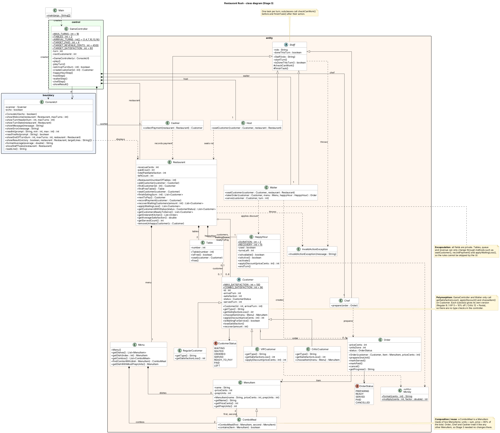
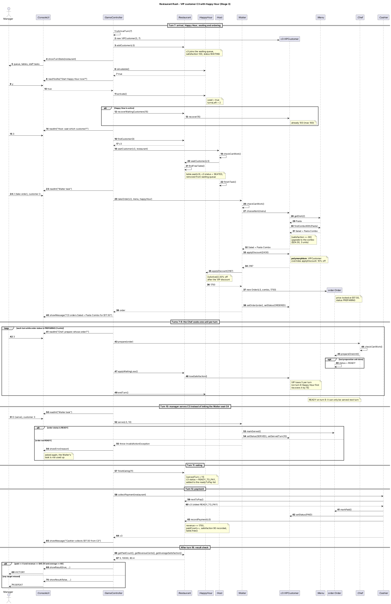

SC2002 Object-Oriented Design & Programming - Group Assignment Report
Lab group: [group] | Members: [names]
Repository: https://github.com/manus369/sc2002-lab-poject (tags stage-1, stage-2, stage-3)
Restaurant Rush is a turn-based command-line game in Java. The player is the manager of a restaurant with 2 tables and one Waiter, Chef and Cashier (and a Host in Stage 3). Six customers arrive on turns 1, 4, 7, 10, 13 and 16. Each turn the manager chooses one task for the Waiter (seat, take an order or serve) and which order the Chef cooks. The Cashier, eating, satisfaction loss and walk-outs are automatic. After turn 18 the game is a victory if at least 4 customers have paid, revenue is at least $45 and the average satisfaction of paid customers is at least 60.
The code uses the entity-control-boundary structure taught in the course:
rush.entity holds the game objects and rules, rush.control.GameController
runs the turn steps, and rush.boundary.ConsoleUI only prints the state and reads input.
| Rule | Our choice |
|---|---|
| Food choice | Customer n's usual dish is menu dish (n-1), wrapping around: Salad, Burger, Pasta, Salad, ... |
| Critic behaviour | Loses 12 per waiting turn and always orders the dish with the most preparation units (Pasta), never a combo. |
| Combo choice (Stage 3) | A customer with satisfaction 90 or more when the order is taken upgrades to the first combo containing their usual dish. Combos: Salad + Burger ($21.60, 2 units), Salad + Pasta ($24.30, 3 units). |
| Arrival line-up (Stage 2+) | C1 Regular, C2 Critic, C3 VIP, C4-C6 Regular. |
| Rounding | Money is stored in integer cents. Each discount is rounded to the nearest cent: VIP first, then Happy Hour. |
| Turn order | Arrivals, display, Happy Hour, Host, Waiter, Chef, Cashier, eating, satisfaction loss. The Cashier runs before eating, so a customer who becomes READY_TO_PAY pays next turn at the earliest. |
The diagram below matches the stage-3 code. Simple getters and setters are left out.
The notes show where encapsulation, polymorphism and composition are used.

Customer (abstract) has three subclasses; Staff (abstract) has Host, Waiter, Chef and Cashier; ComboMeal extends MenuItem.Restaurant creates and owns its 2 Tables, its Menu and its HappyHour; the Menu owns 3 dishes and 2 combos; the GameController owns the restaurant and the staff.ComboMeal refers to two existing MenuItems that also exist on their own.CustomerStatus and OrderStatus describe where a customer and an order are in their life cycle.Scenario (from runs/stage3-victory.txt): the VIP C3 arrives on turn 7 and the manager
chooses to start Happy Hour. The Host seats C3 and the Waiter takes the order. C3 upgrades to a combo,
and the price is worked out by VIPCustomer.applyDiscount (10% off) and then
HappyHour.applyDiscount (20% off): $24.30 → $21.87 → $17.50. The Chef cooks one
unit per turn (loop) until the order is READY, the Waiter serves it on the next turn, C3 eats, the
Cashier collects payment and finally the result is checked. The manager's choice to start Happy Hour
changes the bill (from $21.87 to $17.50) and the satisfaction recorded at payment (+15 on turn 8).

| Class | Responsibility |
|---|---|
| GameController | Runs the 18 turns in the fixed step order, asks the UI for the manager's choices, and checks the victory targets. |
| ConsoleUI | Prints the state and reads input. Rejects input that is not a number in range. Holds no game rules. |
| Restaurant | Holds the tables, queue and customers; seats customers; handles eating, payment records, satisfaction loss and walk-outs; keeps the totals. |
| Customer (+ subclasses) | Satisfaction and status of one customer. Decides what to order, how fast satisfaction drops and the bill discount. |
| Order | Locked price, cooking progress and status of one order. |
| Staff (+ Host, Waiter, Chef, Cashier) | Each staff member does one task per turn and checks that the task is allowed, throwing InvalidActionException with a reason if not. |
| Menu, MenuItem, ComboMeal | The dishes and combos with price (cents) and preparation units. |
| HappyHour | Once-per-game activation, turns left, the 20% discount and the recovery amount. |
ConsoleUI; cooking progress is only in Order; payments only in Cashier and Restaurant.recordPayment. When we changed the screen layout no rule class changed.createCustomer; the turn steps were not edited. ComboMeal was added in Stage 3 without changing Order, Chef or Cashier.Customer subclass can be used wherever a Customer is expected, and a ComboMeal wherever a MenuItem is expected; they keep the same meaning (e.g. a discount never makes the price negative).GameController uses the concrete ConsoleUI class. This is simpler, but we cannot swap in a GUI or a fake UI for tests without changing the controller. Instead we test with input scripts piped into the real game (runs/*.txt).Restaurant has quite a few methods. We kept seating, eating and payment records together because they all change the same tables and lists; splitting them would mean passing those lists around.CustomerStatus enum instead of a class per state. This keeps the number of classes small; the cost is that status checks are spread over a few methods.Waiter.takeOrder gained a HappyHour parameter in Stage 3. This is a small change to an earlier class but keeps the price calculation in one place.We considered a single Customer class with a CustomerType enum and
switch statements for loss rate, discount and order choice. It would have fewer classes,
but every new customer type would mean editing every switch, and the brief asks for behaviour to be
dispatched through the customer objects. We also considered a PricingPolicy interface for
Happy Hour; with only one promotion we kept a plain HappyHour class.
Each script is replayed with ./run.sh --echo < runs/<script>.txt on its tag; the
.out file is the transcript. All six were re-run on their tags and match.
| Tag | Script | Result |
|---|---|---|
| stage-1 | stage1-victory | VICTORY - 5 paid, $66.00, avg 79.2 (includes rejected inputs) |
| stage-1 | stage1-defeat | DEFEAT - 1 paid, $15.00; C1 forgotten and walks out on turn 13 |
| stage-2 | stage2-victory | VICTORY - 5 paid, $67.20, avg 76.0 |
| stage-2 | stage2-defeat | DEFEAT - 3 paid, $34.20; the Critic walks out |
| stage-3 | stage3-victory | VICTORY - 5 paid, $100.30, avg 80.4 |
| stage-3 | stage3-defeat | DEFEAT - 3 paid, $48.15; revenue met but not enough customers paid |
| Requirement | Where it is shown |
|---|---|
| Section 3.3 example (Pasta: seated, ordered, READY, served, ready to pay, paid with 76) | C3 in stage1-victory, turns 7-12: satisfaction 92, 84, 76, served at 76, pays $18.00 with 76. |
| A dish finished this turn is served next turn at the earliest | The Waiter acts before the Chef, so a READY order can only be served on a later turn. |
| Invalid choice explained and asked again | stage1-victory turns 1 and 3 ("abc", serving with no READY order, cooking a READY order). |
| VIP 10% off; Critic 12 loss | stage2-victory: C3 pays $16.20 for Pasta; stage2-defeat: Critic leaves on turn 12. |
| ComboMeal price and units | Salad + Pasta = $24.30, 3 units (menu in the stage-3 transcripts). |
| VIP then Happy Hour | stage3-victory turn 7: $24.30 → $21.87 → $17.50. (Burger: $15 × 0.9 × 0.8 = $10.80.) |
| Happy Hour recovery and duration | stage3-defeat turns 1-2: C1 recovers 15, display shows "ON, 1 turn(s) left". |
| C6 cannot pay within 18 turns | All runs: C6 orders on turn 17-18 and does not pay. |
Start Happy Hour now? Lasts this turn and the next (y/n): y > Happy Hour is ON: 20% off orders taken this turn and next turn. > Happy Hour: C3 (VIP) recovers to satisfaction 100. Host: seat which queued customer? (number, 0 = wait): 3 > Host seats C3 (VIP) at Table 1. Waiter task (1 seat, 2 take order, 3 serve, 0 wait): 2 Which customer? (number, 0 = back): 3 > C3 (VIP) orders Salad + Pasta Combo for $17.50. Chef: prepare whose order? (number, 0 = wait): 3 > Chef prepares C3's Salad + Pasta Combo (1/3).
| Transition | New files | Changed files and why |
|---|---|---|
| Stage 1 → 2 | VIPCustomer, CriticCustomer | Customer: new applyDiscount hook. Waiter: uses it when the order is taken. Menu: getDishWithMostPrepUnits for the Critic. GameController: arrival line-up only. ConsoleUI: shows loss per turn. The turn steps did not change. |
| Stage 2 → 3 | Host, ComboMeal, HappyHour | Menu: holds combos. Customer: combo rule and recover. Waiter: applies Happy Hour after the customer discount. Restaurant: owns HappyHour, recovers waiting customers. GameController: two new steps. ConsoleUI: new prompts and status. Order, Chef, Cashier, Table unchanged. |
Compare links: .../compare/stage-1...stage-2 and .../compare/stage-2...stage-3 (full URLs in the README).
ConsoleUI made the game easy to replay from scripts, which we used as our test notes.Restaurant into smaller classes.